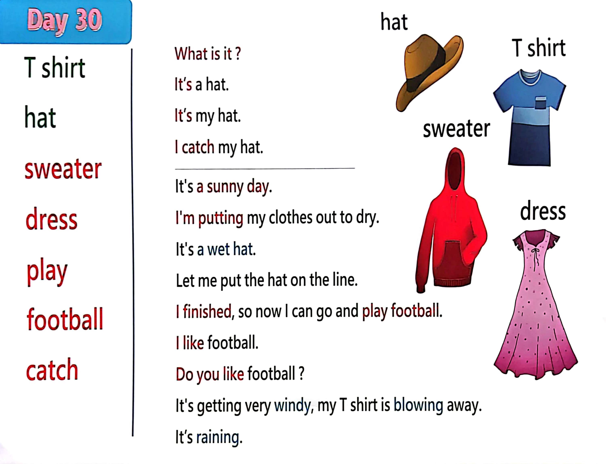

Day 30
Unit 9 · story
教材重点
教材重点依据网盘文件“第二级蓝色每日打卡全.pdf”，第 31 页对应 Day 30；保留文字整理并同时提供原图。
网盘教材重点原图 · PDF 第 31 页对应 Day 30
What i s it ? I t’s a hat. I t’s my hat. I catch my hat. T shirt hat sweater dress play football catch I t's a sunny day. I ' m putting my clothes out to dry. I t's a wet hat. Let me put the hat on the l i ne. I finished, so now I can go and play football. I l i ke football. Do you l i ke football ? I t's getting very windy,my T shirt i s blowing away. I t’s raining. sweater T shirt hat dress

Unit 9 · story · 4–6岁
hat · shirt · hello · look
Hello, hello, hello, hello, everyone. Hello.
台词本为机器转写，可能存在识别误差；不等同于视频逐字原声。
详细内容
Part 1 核心词汇
必须掌握 · 4 个Part 2 跟读句型与句型拓展
左侧保留台词本原句，右侧为替换练习；拓展内容不是视频逐字台词。
Hello, hello, hello, hello, everyone. Hello.
Everyone travel everywhere?
Everyone say, hello. Everyone.
Hat, T shirt, sweater and dress.
Oh, hello. Hi. How are you? Oh,
Part 3 台词本全文
来源：第2级台词本 · 030.Wow!Blue - Unit 9 - part 1 story_9_1.pdf。以下保留网盘 PDF 的机器转写文本，仅清理了文件路径页眉和空行。
Hello, hello, hello, hello, everyone. Hello.
Everyone travel everywhere?
Everyone say, hello. Everyone.
Hat, T shirt, sweater and dress.
Oh, hello. Hi. How are you? Oh,
It's a sunny day.
So I'm putting my clothes out to dry.
Before I go to play football, yeah, who one more thing to put out, hey, look, what's this What is it.
Yeah, it's a hat, hey, oh, that, no, it's a wet hat, but it's a hat, so say it with me, come on.
It's a hat. What is it It's a hat What is it It's a hat. Yeah.
Let me put the hat on the line, so what clothes can you see? Oh, look, there's a sweater.
Address.
A-T shirt and a hat.
Great, I finished, so now I can go and play football. Come on, come with me, yeah?
Hey, hey, over here, I like football. Do you like football? Yeah?
Oh dear, it's getting very windy. Oh, no, my hat, hey my hat, oh.
Oh, look, my T shirt is blowing away my T shirt, my T shirt, help me catch my taste.
Oh no, like his dress and my sweater.
Apple.
I need help, who, maybe monkey can help. Maggie. Maggie.
Can you help these, OK, catch my clothes.
Oh, look, HA, HA, what's that? Hey, it's stay, is T shirt.
Catch.
Oh, look, it's my t shirt. Thank you, maggie, I've got my.
Look back.
My hat, catch my hat, please, maggie, I'll catch your hat.
Hi.
Okay, ready.
Super, it's my hat. Oh, thank you.
What have you got now, but what is it? Oh, look,
/
-
/2/030.Wow!Blue - Unit 9 - part 1 story_9_1.txt[2022/3/29
星期二
6:42:43]
What's that?
What is it It's my dress.
Yeah, got it, okay, steve, catch.
What is it.
Oh yeah.
It's a dress, it's Maggie's dress. So what is it say with me, it's a dress louder.
Yes, louder, it's a dress. Yeah. Well, done.
Hey,
What's this What is it What is it? Oh, hey, it's a.
Sweater, ah, so say it with me up here, what is it.
It's a sweater down here.
Boots are sweater up here.
It's, oh sweater down here, it's a sweater, well done.
Oh, great, it's not windy anymore.
I'l
l
put my washing back on the line, oh, and thank you, maggie, thanks for helping. I've got my sweater
back.
Oh, I've got your D-D-D-D-D.
Dress hat that, right? Oh, one more thing.
What is it What is it What is it.
Yeah, it's.
E, show to come on, say with me, it's A-T shirt, what is it It's A-T shirt And again,
It's our T shirt, well done.
Now we can go and play football again. Come on.
Oh,
Bye bye, see you next time. Bye bye.